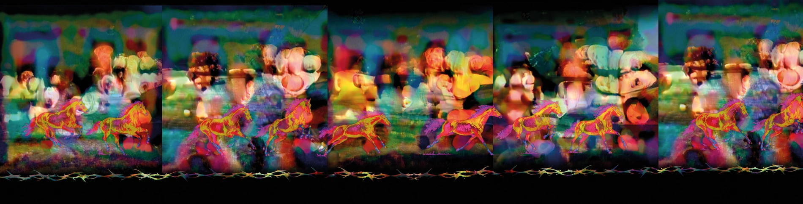
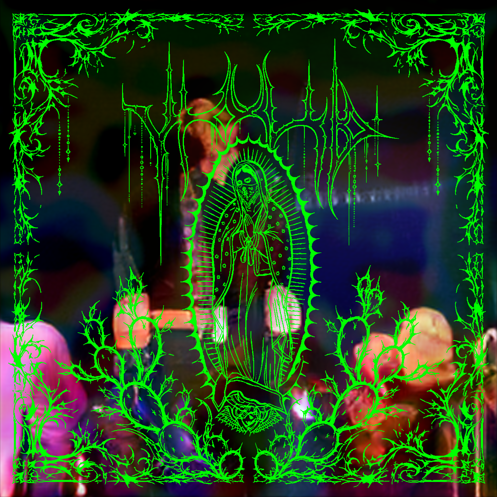

Supresión de detección / Vanishing
Desarrollo de parches adversariales para reducir las detecciones de la categoría person en modelos YOLO.
El proceso abarca la generación digital de patrones, la impresión textil y las pruebas físicas.


El desarrollo se apoyó en tres repositorios de investigación.
El trabajo de Thys, Van Ranst y Goedemé (2019) aportó la metodología general para optimizar parches que reducen la detección de personas. Adversarial YOLO.
El trabajo de Hu et al. (2021) sirvió de referencia para partir de imágenes generadas con BigGAN y explorar parches con una apariencia naturalista. Naturalistic Adversarial Patch.
El trabajo de Wang, Ma y Jiang (2025) orientó el uso de máscaras para delimitar qué zonas del diseño pueden modificarse durante la optimización. BadPatch.
El paso de la imagen digital a la tela también plantea el problema de las condiciones de captura. La técnica Expectation over Transformation (EoT) incorpora variaciones simuladas, como cambios de ángulo e iluminación, durante la optimización. Athalye et al. (2018).